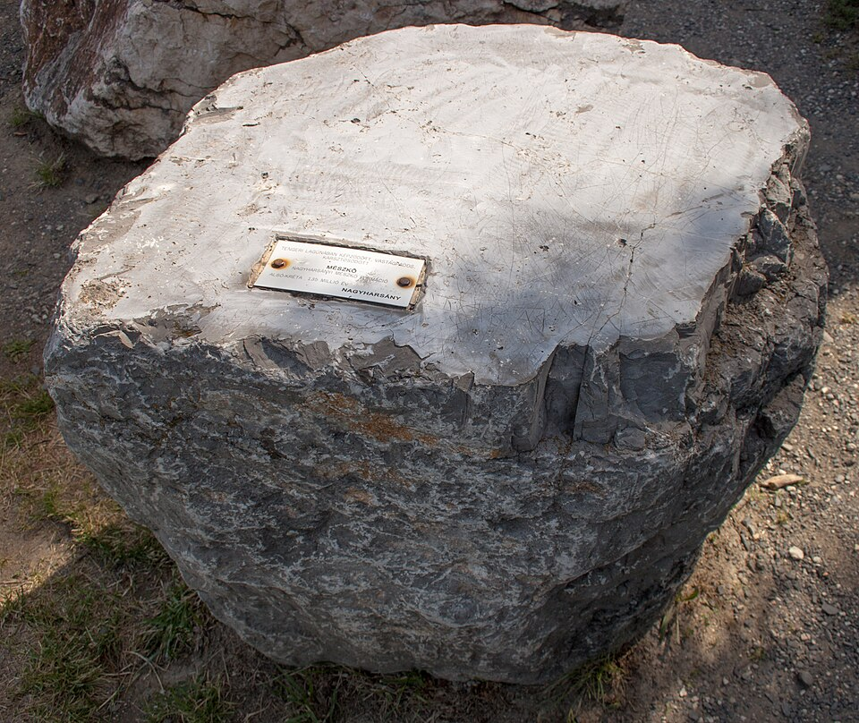
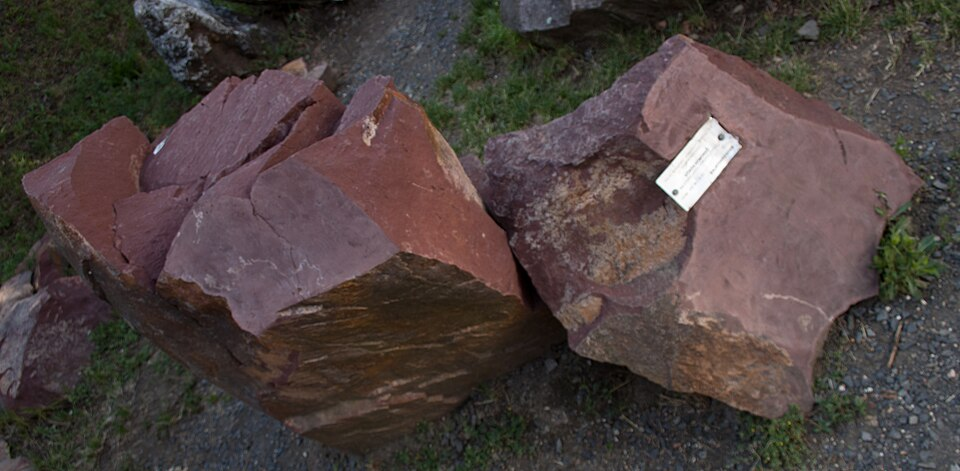
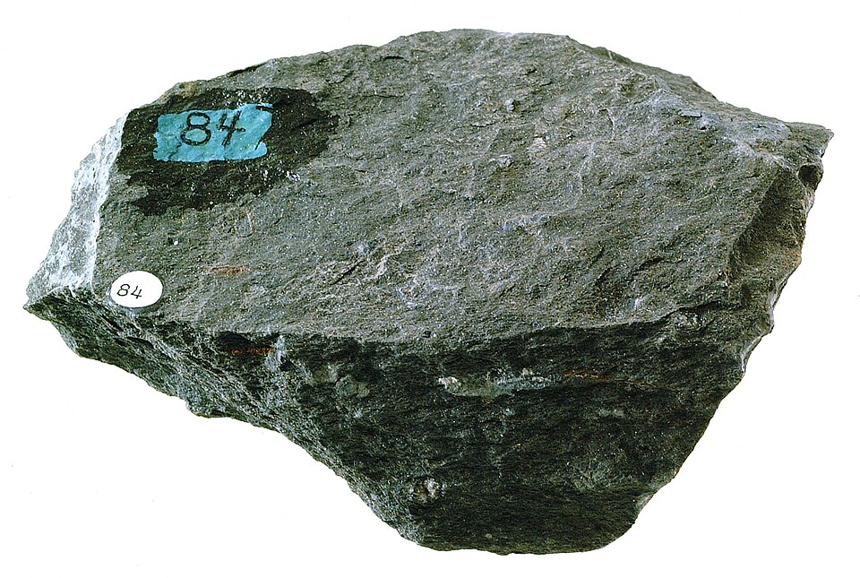
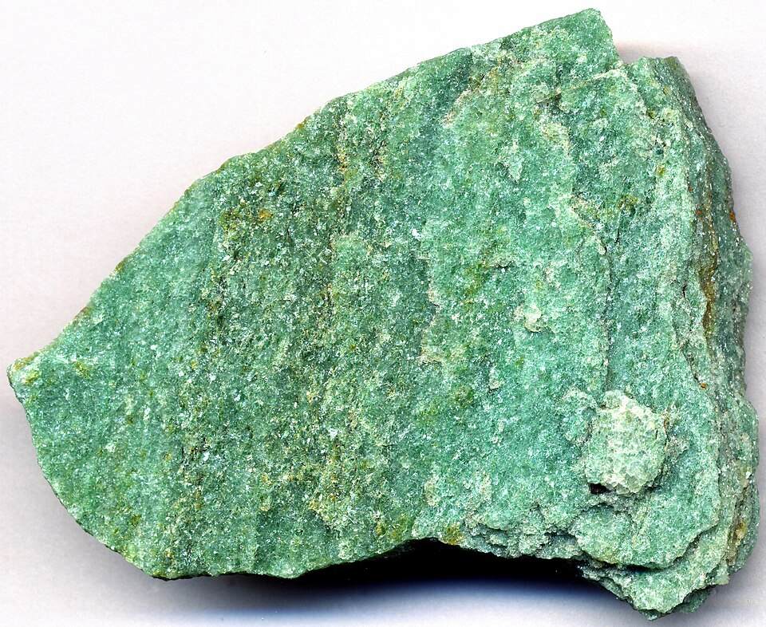

Магматическая
Гранит
Светлая или пёстрая глубинная порода с заметными зёрнами кварца, полевого шпата и слюды. Медленное охлаждение магмы даёт минералам время вырасти до различимого размера.
Фото: Public DomainКоллекция образцов
В каталоге собраны магматические, осадочные и метаморфические породы. Карточки помогают сравнить их происхождение, внешний вид и характерные свойства.
Светлая или пёстрая глубинная порода с заметными зёрнами кварца, полевого шпата и слюды. Медленное охлаждение магмы даёт минералам время вырасти до различимого размера.
Фото: Public Domain
Вулканическая порода промежуточного состава. Обычно она серая и мелкозернистая, но иногда содержит крупные кристаллы в более тонкой основной массе.
Фото: CC BY-SA 3.0
Тёмная вулканическая порода, богатая железом и магнием. Базальтовая лава сравнительно текучая и быстро застывает на поверхности, образуя мелкозернистую структуру.
Фото: CC BY-SA 3.0
Образуется при перекристаллизации известняка под действием температуры и давления. Основу составляет кальцит, а примеси создают прожилки и разнообразные оттенки.
Фото: CC BY-SA 2.0
Порода, состоящая главным образом из карбоната кальция. Она может формироваться из минерального осадка или остатков морских организмов и нередко содержит окаменелости.
Фото: Public Domain
Состоит из сцементированных песчинок. Цвет зависит от состава зёрен и цемента: оксиды железа часто придают породе красные и бурые оттенки.
Фото: Public Domain
Мелкозернистая порода, которая легко раскалывается на тонкие пластины. Такая сланцеватость появляется, когда исходная глинистая порода испытывает направленное давление.
Фото: CC0
Прочная порода, возникающая из кварцевого песчаника. При метаморфизме отдельные песчинки перекристаллизуются и образуют плотную мозаику кварцевых зёрен.
Фото: CC BY 2.0
Вулканическое стекло, возникающее при очень быстром охлаждении лавы. Кристаллы не успевают вырасти, поэтому свежий скол бывает гладким и блестящим.
Фото: CC BY 2.0
Очень пористая вулканическая порода. Пузырьки газа остаются в быстро застывшей лаве и образуют множество пустот, поэтому некоторые образцы способны плавать в воде.
Фото: CC0Описание составлено по материалам USGS, Collecting Rocks и Volcano Hazards Program Glossary.


_Slate_(GeoDIL_number_-_335).jpg){kind=link}
2.54_Ga;_Laramie_Range,_Wyoming,_USA)_1.jpg){kind=link}
_1.jpg){kind=link}
.jpg){kind=link}